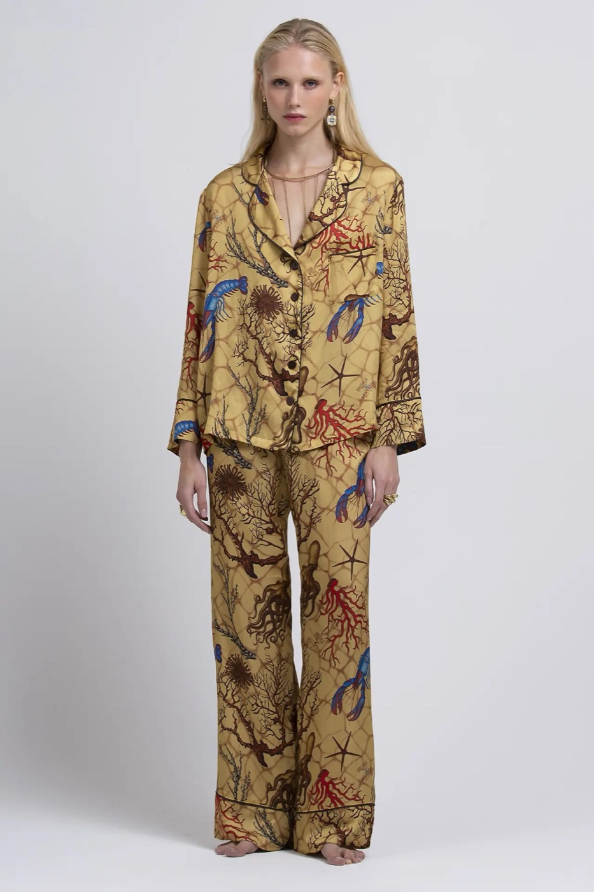

Silence Please è un invito a fare silenzio per sognare a occhi aperti. In una casa giapponese di legno, un pomeriggio, lei lo prende alla lettera: chiude gli occhi, e la seta porta dentro il mare.
01 — Il capo resta il vostro
Il Lucile Sexy Fish Gold, indossato, in una casa vera.
Sono partito dal vostro Lucile: la camicia con il collo a rever, i bottoni in madreperla e il taschino, il pantalone palazzo, il profilo marrone che disegna ogni bordo. Ho seguito la stampa scena per scena perché restasse la vostra: l'astice blu, il corallo rosso, le stelle marine, i ricci e le alghe brune sul reticolo color miele. La seta lavora da sola: scivola dalle spalle, fa lo strascico sulla moquette, prende la luce.

Il vostro scatto
In campagna
Tessuto100% seta italiana
CamiciaRever e madreperla
PantalonePalazzo
Fattoin Italia
02 — La serie
Una casa, un pomeriggio, nessun altro.
Pareti di noce, uno shoji, i rotoli dipinti e i tappeti degli anni Sessanta. Il trucco è quello del teatro giapponese, fatto con leggerezza: pelle chiarissima, azzurro sulle palpebre, il rosa sulle guance. Momenti rubati più che pose, e alla fine la camicia lasciata sul letto, come se lei fosse appena uscita dalla stanza.
03 — Il film
Il mare in una stanza.
Uno spot verticale di ventitré secondi. Si apre su un pesce rosso che gira nella ciotola di ceramica sul comò. Lei attraversa la casa scalza, e la seta le scivola dalle spalle. Quando si siede e chiude gli occhi, la luce dell'acqua entra nella stanza e scorre sul legno, sulla pelle e sulla seta. In chiusura resta la camicia vuota sul letto, mentre la luce si spegne.
04 — Il resto del mio lavoro
Campagne complete e film, costruiti intorno al prodotto.
Qui trovate la mia presentazione, con i mondi che ho costruito per altri marchi.
La stessa cura sul Sexy Fish Pink e Black, sulle altre stampe dei Lucile, sui kimono e sulle vestaglie, con immagini e un film per ogni uscita. Senza organizzare uno shooting.
Le immagini e il film sono costruiti con strumenti di intelligenza artificiale, sotto la mia direzione creativa e con il mio ritocco finale. La musica del film è originale e libera da diritti. Prova non commerciale, preparata solo per Silence Please.